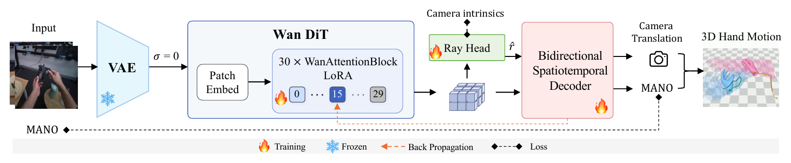

ACE-Ego-Hand
Repurposing Video Diffusion Models for Occlusion-Robust Egocentric 3D Hand Motion Recovery
1Shanghai Jiao Tong University 2Nanyang Technological University 3The Chinese University of Hong Kong 4ACE Robotics
† Project leader ✉ Corresponding author
30%MPJPE-p cut · ARCTIC
40%MPJPE-p cut · HOT3D
46–61%Gain out of sight
5Egocentric benchmarks
0External detectors
Abstract
Egocentric video offers scalable manipulation data for embodied AI, yet recovering metric 3D hand trajectories remains challenging due to severe object occlusion and frequent out-of-sight gaps. Existing single-frame and windowed temporal regressors fail when hand shortly leaves the frame, while recent video diffusion models (VDMs) rely on heavy, stochastic multi-step sampling as pixel-space renderers. We instead repurpose VDM into a deterministic geometry encoder. A single forward pass over the clean latent exposes scene content beyond current observations, including occluded and out-of-sight hands. We introduce ACE-Ego-Hand, an offline clip-level framework that extracts features via a Deterministic Clean-Latent Encoder and decodes them with a Bidirectional Spatiotemporal Decoder. ACE-Ego-Hand recovers continuous bimanual trajectories with metric placement and no external detector, while a Ray-Based Camera Solver supports a second configuration that needs no test-time camera intrinsics. Across five egocentric benchmarks, ACE-Ego-Hand sets a new state of the art, cutting MPJPE-p by 30% on occlusion-heavy ARCTIC and 40% on HOT3D. These gains reach 46%–61% once out-of-sight hands are included in the evaluation, offering a scalable path from everyday human video to robot manipulation data.
Method

Qualitative Results
We present side-by-side qualitative comparisons across ARCTIC, HOT3D and OAKINK2 under a shared protocol, and on unscripted in-the-wild egocentric footage where no ground truth exists. ACE-Ego-Hand remains stable under strong interaction and partial occlusion, which makes the representation suitable for downstream retargeting and manipulation analysis.
ARCTIC
HOT3D
OAKINK2
IN THE WILD
GT
Ours (ACE-Ego-Hand)
ViDiHand
EgoForce
Dyn-HaMR
HaWoR
WiLoR
HaMeR
Retarget to Dexterous Hand
ACE-Ego-Hand learns a dual mapping between human and robot hands. This makes occlusion-robust retargeting practical for teleoperation, imitation learning, and dexterous deployment.
Results
Result analysis. ACE-Ego-Hand stays ahead most clearly on occlusion-heavy and out-of-sight cases, suggesting that the clean-latent representation preserves hand state even when visual evidence is missing.
| Method | FAcc ↑ | Recall ↑ | F1 ↑ | MPJPE-p ↓ | PA-p ↓ | MPJPE + OOS ↓ | EPE2D-p ↓ | GO-p ↓ | CT-p ↓ | Jitter ↓ |
|---|---|---|---|---|---|---|---|---|---|---|
| InterWild | 0.878 | 0.943 | 0.959 | 30.817 | 15.952 | 39.435 | 53.888 | 25.386 | 0.097 | 46.577 |
| HaMeR | 0.875 | 0.943 | 0.957 | 29.197 | 14.596 | 38.183 | 65.289 | 24.907 | 0.095 | 18.279 |
| Hamba | 0.833 | 0.912 | 0.941 | 31.233 | 17.168 | 40.039 | 87.047 | 27.822 | 0.110 | 15.357 |
| WildHands | 0.879 | 0.946 | 0.960 | 25.704 | 13.941 | 33.915 | 50.517 | 22.320 | 0.058 | 12.972 |
| WiLoR | 0.919 | 0.951 | 0.974 | 22.012 | 11.873 | 31.502 | 71.527 | 17.358 | 0.075 | 24.091 |
| EgoForce | 0.882 | 0.930 | 0.963 | 22.388 | 14.322 | 32.193 | 61.761 | 21.073 | 0.069 | 24.158 |
| OmniHands | 0.866 | 0.949 | 0.954 | 29.674 | 14.203 | 38.191 | 51.505 | 24.580 | 0.087 | 45.312 |
| Dyn-HaMR | 0.842 | 0.918 | 0.951 | 27.904 | 17.017 | 37.445 | 85.723 | 25.951 | 0.121 | 12.840 |
| HaWoR | 0.700 | 0.817 | 0.895 | 45.357 | 26.375 | 53.443 | 158.062 | 43.325 | 0.149 | 19.789 |
| ViDiHand | 0.997 | 0.999 | 0.999 | 21.668 | 9.821 | 31.045 | 12.407 | 14.642 | 0.047 | 3.183 |
| ACE-Ego-Hand | 1.000 | 1.000 | 1.000 | 15.256 | 7.474 | 16.783 | 9.180 | 11.807 | 0.021 | 2.700 |
Higher is better for FAcc, Recall, and F1; lower is better for the rest. MPJPE, PA, and Jitter are in mm, and CT is in m.
| Method | FAcc ↑ | Recall ↑ | F1 ↑ | MPJPE-p ↓ | PA-p ↓ | MPJPE + OOS ↓ | EPE2D-p ↓ | GO-p ↓ | CT-p ↓ | Jitter ↓ |
|---|---|---|---|---|---|---|---|---|---|---|
| InterWild | 0.669 | 0.881 | 0.868 | 77.168 | 24.811 | 89.218 | 71.482 | 58.501 | 0.213 | 101.164 |
| HaMeR | 0.692 | 0.904 | 0.883 | 68.314 | 21.455 | 80.264 | 59.077 | 49.636 | 0.102 | 23.632 |
| Hamba | 0.632 | 0.828 | 0.853 | 71.732 | 29.620 | 83.438 | 107.625 | 56.525 | 0.128 | 18.507 |
| WildHands | 0.655 | 0.863 | 0.844 | 52.791 | 28.946 | 60.491 | 111.438 | 53.933 | 0.157 | 22.885 |
| WiLoR | 0.827 | 0.897 | 0.937 | 30.966 | 19.980 | 52.014 | 72.978 | 25.746 | 0.098 | 17.976 |
| EgoForce | 0.769 | 0.856 | 0.916 | 43.960 | 25.709 | 63.085 | 83.521 | 37.144 | 0.130 | 38.342 |
| OmniHands | 0.649 | 0.895 | 0.868 | 63.281 | 22.682 | 73.503 | 68.437 | 49.120 | 0.133 | 69.510 |
| Dyn-HaMR | 0.614 | 0.811 | 0.802 | 74.214 | 38.201 | 80.952 | 171.617 | 43.851 | 0.571 | 44.942 |
| HaWoR | 0.348 | 0.499 | 0.654 | 71.396 | 66.031 | 84.733 | 327.294 | 79.350 | 0.262 | 23.872 |
| ViDiHand | 0.948 | 0.974 | 0.983 | 21.514 | 11.383 | 44.440 | 14.953 | 15.829 | 0.040 | 3.741 |
| ACE-Ego-Hand | 0.986 | 0.998 | 0.996 | 12.888 | 6.436 | 17.273 | 6.418 | 7.924 | 0.025 | 3.159 |
Higher is better for FAcc, Recall, and F1; lower is better for the rest. MPJPE, PA, and Jitter are in mm, and CT is in m.
| Method | FAcc ↑ | Recall ↑ | F1 ↑ | MPJPE-p ↓ | PA-p ↓ | MPJPE + OOS ↓ | EPE2D-p ↓ | GO-p ↓ | CT-p ↓ | Jitter ↓ |
|---|---|---|---|---|---|---|---|---|---|---|
| InterWild | 0.731 | 0.922 | 0.864 | 53.072 | 22.909 | -- | 80.549 | 41.743 | 0.228 | 98.866 |
| HaMeR | 0.731 | 0.923 | 0.864 | 44.481 | 21.580 | -- | 79.494 | 33.557 | 0.187 | 20.068 |
| Hamba | 0.710 | 0.885 | 0.849 | 47.161 | 25.924 | -- | 115.793 | 37.390 | 0.204 | 21.556 |
| WildHands | 0.730 | 0.924 | 0.864 | 45.623 | 23.601 | -- | 82.246 | 45.654 | 0.159 | 18.615 |
| WiLoR | 0.962 | 0.966 | 0.972 | 33.710 | 14.903 | -- | 41.579 | 25.527 | 0.115 | 17.449 |
| EgoForce | 0.917 | 0.941 | 0.949 | 44.746 | 19.160 | -- | 75.821 | 38.861 | 0.126 | 83.452 |
| OmniHands | 0.655 | 0.937 | 0.834 | 44.255 | 18.689 | -- | 70.662 | 34.392 | 0.108 | 24.212 |
| Dyn-HaMR | 0.750 | 0.863 | 0.845 | 45.097 | 29.259 | -- | 144.643 | 40.176 | 0.258 | 17.947 |
| HaWoR | 0.869 | 0.864 | 0.919 | 47.329 | 28.851 | -- | 135.748 | 43.091 | 0.139 | 28.376 |
| ViDiHand | 0.984 | 0.991 | 0.990 | 30.090 | 13.960 | -- | 24.460 | 23.420 | 0.117 | 4.010 |
| ACE-Ego-Hand | 0.958 | 0.996 | 0.974 | 23.031 | 11.664 | -- | 14.987 | 18.426 | 0.057 | 2.393 |
Higher is better for FAcc, Recall, and F1; lower is better for the rest. MPJPE, PA, and Jitter are in mm, and CT is in m.
| Method | FAcc ↑ | Recall ↑ | F1 ↑ | MPJPE-p ↓ | PA-p ↓ | MPJPE + OOS ↓ | EPE2D-p ↓ | GO-p ↓ | CT-p ↓ | Jitter ↓ |
|---|---|---|---|---|---|---|---|---|---|---|
| InterWild | 0.981 | 0.990 | 0.994 | 21.526 | 8.979 | -- | 19.929 | 17.695 | 0.037 | 16.153 |
| HaMeR | 0.980 | 0.990 | 0.992 | 20.079 | 7.221 | -- | 21.786 | 17.971 | 0.034 | 9.307 |
| Hamba | 0.960 | 0.979 | 0.987 | 21.412 | 8.390 | -- | 32.978 | 19.510 | 0.038 | 8.285 |
| WildHands | 0.989 | 0.995 | 0.996 | 32.587 | 10.508 | -- | 26.297 | 22.033 | 0.082 | 10.894 |
| WiLoR | 0.994 | 0.998 | 0.998 | 16.390 | 5.633 | -- | 14.497 | 14.495 | 0.023 | 6.117 |
| EgoForce | 0.990 | 0.996 | 0.997 | 16.219 | 6.020 | -- | 15.849 | 10.416 | 0.024 | 8.046 |
| OmniHands | 0.974 | 0.986 | 0.990 | 19.835 | 7.417 | -- | 25.665 | 18.032 | 0.038 | 6.321 |
| Dyn-HaMR | 0.988 | 0.999 | 0.997 | 17.213 | 6.390 | -- | 10.790 | 11.057 | 0.030 | 5.349 |
| HaWoR | 0.946 | 0.972 | 0.985 | 23.504 | 9.570 | -- | 39.735 | 17.080 | 0.045 | 14.162 |
| ViDiHand | 0.997 | 0.999 | 0.999 | 17.320 | 7.987 | -- | 16.544 | 12.159 | 0.040 | 1.990 |
| ACE-Ego-Hand | 0.999 | 1.000 | 1.000 | 9.223 | 4.894 | -- | 6.088 | 5.689 | 0.031 | 0.707 |
Higher is better for FAcc, Recall, and F1; lower is better for the rest. MPJPE, PA, and Jitter are in mm, and CT is in m.
| Method | FAcc ↑ | Recall ↑ | F1 ↑ | MPJPE-p ↓ | PA-p ↓ | MPJPE + OOS ↓ | EPE2D-p ↓ | GO-p ↓ | CT-p ↓ | Jitter ↓ |
|---|---|---|---|---|---|---|---|---|---|---|
| InterWild | 0.547 | 0.722 | 0.819 | 51.013 | 37.038 | 65.619 | 244.590 | 54.710 | 0.179 | 43.499 |
| HaMeR | 0.680 | 0.799 | 0.866 | 43.804 | 28.726 | 59.471 | 171.887 | 46.340 | 0.148 | 19.510 |
| Hamba | 0.634 | 0.755 | 0.840 | 46.517 | 32.488 | 61.863 | 213.576 | 51.295 | 0.159 | 13.811 |
| WildHands | 0.731 | 0.837 | 0.890 | 44.087 | 27.115 | 58.366 | 151.305 | 43.806 | 0.146 | 15.156 |
| WiLoR | 0.921 | 0.955 | 0.973 | 26.520 | 12.481 | 45.215 | 39.928 | 25.084 | 0.085 | 9.522 |
| EgoForce | 0.846 | 0.912 | 0.949 | 36.725 | 18.198 | 55.095 | 81.356 | 35.671 | 0.101 | 30.476 |
| OmniHands | 0.530 | 0.688 | 0.787 | 54.712 | 40.373 | 68.024 | 283.245 | 60.157 | 0.174 | 22.562 |
| Dyn-HaMR | 0.882 | 0.941 | 0.947 | 28.781 | 14.945 | 47.434 | 46.902 | 25.711 | 0.102 | 7.311 |
| HaWoR | 0.818 | 0.891 | 0.935 | 35.428 | 20.670 | 52.775 | 96.442 | 32.043 | 0.120 | 13.780 |
| ViDiHand | 0.813 | 0.886 | 0.937 | 38.996 | 22.827 | 56.047 | 101.568 | 38.119 | 0.103 | 3.728 |
| ACE-Ego-Hand | 0.977 | 0.985 | 0.993 | 8.988 | 5.887 | 8.272 | 11.129 | 7.222 | 0.018 | 1.089 |
Higher is better for FAcc, Recall, and F1; lower is better for the rest. MPJPE, PA, and Jitter are in mm, and CT is in m.
Citation
BibTeX
@misc{liu2026aceegohand,
title={ACE-Ego-Hand: Repurposing Video Diffusion Models for Occlusion-Robust Egocentric 3D Hand Motion Recovery},
author={Yufei Liu and Xixi Wang and Hao Li and Ganlong Zhao and Kaitong Cai and Chengkai Jin and Chunxiao Liu and Jianbo Liu and Siyuan Huang and Xingang Pan and Hongsheng Li},
year={2026},
eprint={2608.20308},
archivePrefix={arXiv},
primaryClass={cs.CV},
url={https://arxiv.org/abs/2608.20308},
}